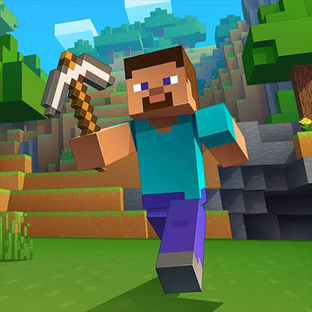

Welcome to My Blog!
October 3, 2026 by Alexandria Green
Minecraft, which has been a popular game for more than 10 years, gives players a blank world to do what they want with it.They could hit a tree, make a pickaxe. before you know it you are rushing to put up a shelter before night and the creepers. Then, before you know it you are rushing to put up a shelter before night and the creepersarrival. Some people chase the Ender Dragon, others build castles or redstone machines and that freedom makes it feel never gets old.

The game is just as much about community as it is about gameplay. Friends hop on servers to build massive projects together, creators fill YouTube with tutorials and challenge runs, and modders keep adding new ideas that stretch what the game can do. Even after thousands of hours, there's always something new to try,whether that's a fresh update, a new seed, or a build you've been meaning to finish.
What I love most is that the game never tells you what to do. Some players go straight for the Ender Dragon, gathering diamonds and enchanting gear for the final fight. Others never leave their starting village, happily building farms, bridges and towers until the whole landscape looks like a little town. I usually end up somewhere in the middle, starting a big build and then getting distracted by a ravine or a flooded mine. That freedom is the reason I keep coming back, and it is why I wanted my first blog post to be about it.